获取飞机的剖面图
陈子坚
在设计、制作像真飞机模型过程中，必不可少的步骤是获得原型飞机的剖面图特别是机身剖面图，作为设计、制作的重要依据，剖面的准确与否，关系到模型的像真程度，而且往往是“形似”与“形神兼似”的关键差别。
笔者钟情于像真飞机模型的制作与飞行，根据一些实践的经验，推荐 3 种常用的获得原型机剖面图的方法，3 种方法互有优缺，结合使用，基本可以准确完成大部分原型飞机的剖面图获取。由于本文着重关于剖面获取的方法，因此下文涉及的一些软件，只提及用到的命令及操作顺序，详细的软件使用方法就不再叙述。
任务目标：准确获取原型飞机的剖面图。
首先，要澄清一个模友常常提出的问题，如果手上只有平面三视图，能否准确画出飞机的剖面图？答案是否定的。必须找到比三视图更丰富的资料、素材，才可能完成任务（当然也有例外，如 Mig15 机身剖面是简单的正圆形，可以靠三视图量取直径画出）。具体哪些素材，依据所用的方法而定。
方法 1：依据带有剖面的现成图纸，描画出飞机的剖面图。
优点：最直接的办法.
缺点：常见的飞机的图纸相对好找，但是很多飞机的图纸都难找；
现成图纸的剖面准确程度参差不齐，不准确的地方不容易发现。
只能获得图纸所提供的有限个数剖面图。
例子：F16 机身剖面
所用素材与软件：带剖面图的 F16 三视图，Autocad。
许多常见飞机特别是现代战斗机的三视图与剖面图，都比较容易找到，最著名的如法国网站 http://richard.ferriere.free.fr/上，包括世界各个国家的大量飞机线图，从莱特兄弟的飞行者一号到喷气战斗机 Su27，均有收录，其中很多都带有剖面图。下面就举例 F16 的机身剖面图描画。
首先，收集到 F16 的线图（图 1），命名文件名为 F16.jpg。
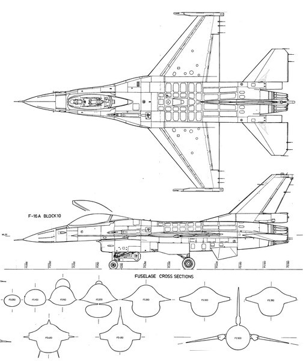
图 1 F16 线图
以 Autocad 绘图软件为例，打开软件，点击下拉菜单“插入”，点选“光栅图像”，找到 F16.jpg，点击“打开”，插入到绘图界面中（图 2）。
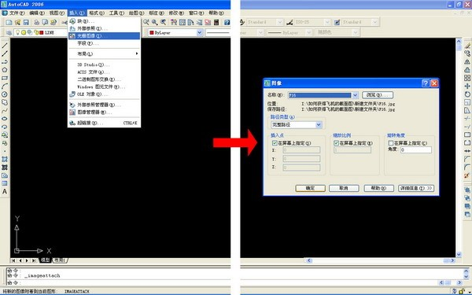
图 2 以光栅图像插入图片
用“scale”命令调整图纸为制作所需要的大小，如 1/16 比例（即模型长度 960mm），然后用 Line、
Arc、Pline 等命令描画剖面线图（图 3）。
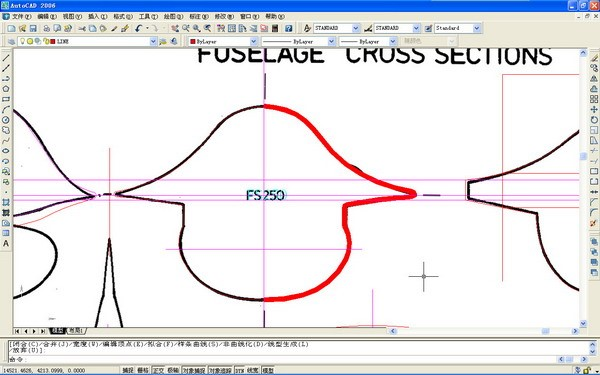
图 3 描画剖面图如果所画的线显示不出，实际上是叠加到光栅图像之下被遮挡了，可以点击菜单“工具”，点击“绘图顺序”—>“后置”（图 4），然后点取插入的光栅图像（即 F16.jpg），即可解决。
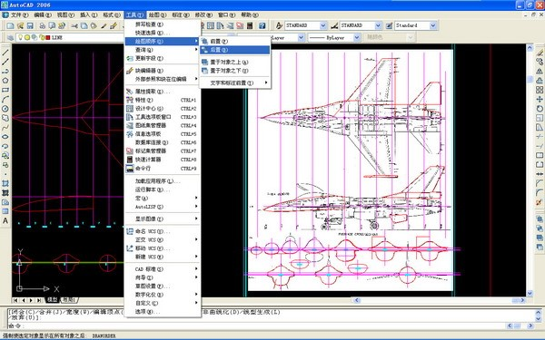
图 4 改变显示顺序
因为机身是对称的，因此画剖面只需画半边，之后用 Mirror 命令对称翻转。由于原型线图往往会有差错，因此画的剖面要返回到三视图中校对，以三视图的轮廓为准，调整剖面图（图 5）。
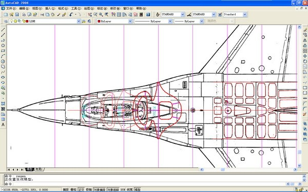
图 5 将剖面与三视图比对修正
图 6 为按照图纸描画出的 F16 完整的各个机身剖面图。如果制作模型所需要的剖面（如模型的隔框所在），并不在图纸所提供的剖面中，则要用已有剖面做三维建模，得到整个机身的模型，然后再用下面介绍的方法 3 取得任意位置的剖面。
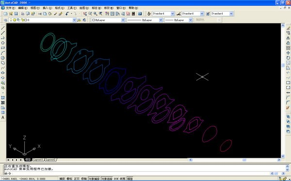
图 6 描画完成的 F16 机身剖面图
方法 2：依据实体模型，取得剖面图。
优点：可根据需要确定剖面位置；机型最齐全。
缺点：需要购买实体模型，有些进口模型所费不菲； 需要破坏实体模型；例子：J10 机身剖面
所用素材与软件：J10 1/48 拼装模型，记号笔，手锯，砂纸，扫描仪，Autocad。
方法 2就是找到原型机的缩比实体模型，如静态拼装模型，在需要获取剖面的地方剖开，扫描剖开面，然后按方法1描画剖面。由于静态拼装模型的厂牌众多，产品丰富，大部分的飞机都不难找得到。实体模型的选择，首先要外形准确，只有准确的原型才能获得准确的剖面；其次就是比例不要太小，1/48、1/72的比例比较合适；最后当然就是不需要太贵，国产的产品已经足够。最好可以同时购买两套，一套用作解剖扫描，一套保持完整以对比校正体型。
首先将实体模型拼装好，然后根据设计需要，在机身用记号笔画好剖面位置（图 7），然后用手锯锯开，锯开面要垂直于机身纵轴（图 8）。对剖面用砂纸打磨，去掉毛刺处理平滑，然后对剖开面扫描，得到剖面正投影图片（图 9），然后用方法 1 用 Autocad 描画剖面图。在描画剖面图的同时，最好将拼装模型附带的三视图也一并插入，调整到与剖面比例一致，作为描画剖面图的参考（图 10）。还可以把机翼、尾翼的平面一并扫描，进而画出所需的图纸。图 11 为根据剖开面描画的 J10 各个机身剖面图。
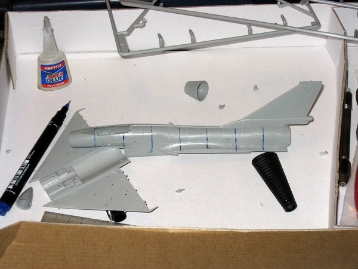
图 7 用记号笔在机身上画上剖面位置
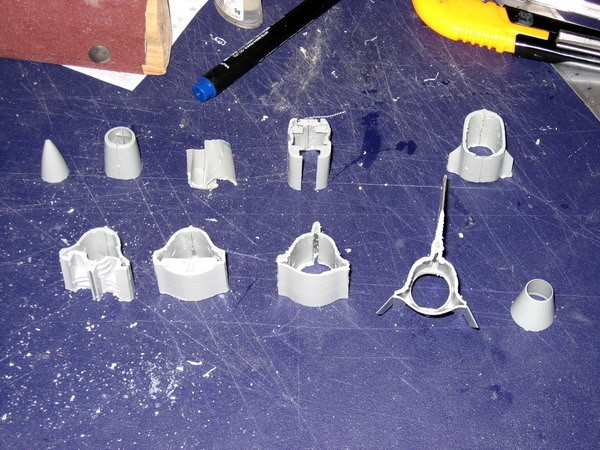
图 8 用手锯锯开
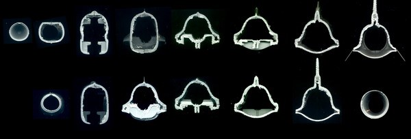
图 9 扫描机身剖开面
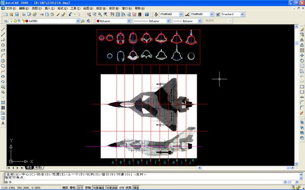
图 10 按方法 1 描画机身剖面图
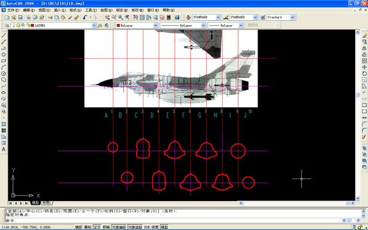
图 11 描画完成的机身剖面图
方法 3：依据三维模型，用 Sketchup 软件获得剖面图。
优点：可以获取任意位置、任意角度的剖面； 自动生成 Dwg、DXF 等格式的剖面图，不需要手动描画； 机型资源较多，且在不断增加中。
缺点：还没发现。
例子：YF23 剖面
所需软件：Google Sketchup Pro，Autocad
方法 3 是笔者总结的最好的一个获取剖面的方法，机型资源十分丰富，获取剖面非常简便，而且可以取得任意位置任何角度的剖面，包括非垂直于坐标轴系的剖面。
Sketchup 是一款强调简单易用的草图建模软件，最初是针对建筑设计开发的，经过几年发展，特别是被 Google 收购后，Sketchup 用户越来越多，早已不止建筑师。Google Sketchup 十分强调开放性与共享性，用户可以免费下载或者上载各式各样的三维模型到模型库，与别人分享，其中不乏大量的飞行器模型，并在不断陆续增加中，图 12 是一些在模型库中的飞机模型，可见机型十分丰富，这些模型为我们获取剖面提供了大量素材。
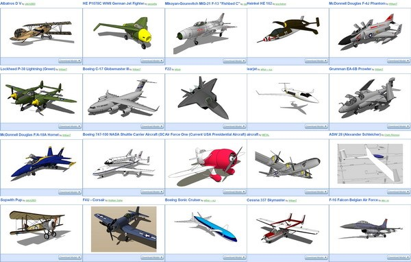
图 12 Google Sketchup 模型库中的一些飞行器三维模型
Sketchup Pro 软件带有生成剖面的功能，可以很容易地生成 Dwg、DXF 等格式的剖面图，而不需要手动描画。
首先，要安装Sketchup软件，软件可以在Google官方网页下载：http://sketchup.google.com/download（/ 图
13）。注意必须下载安装Pro版本，才带有生成剖面的功能。下载安装完成，还可以下载安装汉化包汉化。
图 13 下载 Google Sketchup Pro 版
然后，可以在Google的模型库中搜索所要的机型：http://sketchup.google.com/3dwarehouse/。以YF23 为例，在搜索栏输入“YF 23”，搜索结果中有不少YF23 三维模型（图 14），选取体型准确，细节丰富的一个，下载到本地。
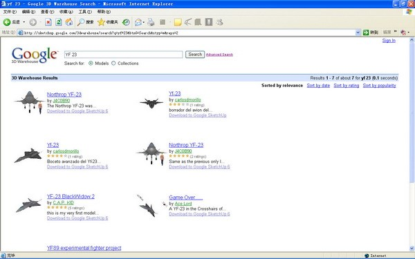
图 14 搜索下载 YF23 三维模型
为了方便介绍，这里采用了汉化了的 Sketchup 专业版。打开下载的 YF23 模型，软件界面以及几个将会用到的功能按钮如图 15。其中，黄框中的按钮需要点击“查看”下拉菜单，在工具栏中将“剖切” 和“视图”打钩后显示。为方便获取剖面，要将模型的显示从默认的透视图改为轴测图，点击“相机” 下拉菜单，将“透视显示”改为“平行投影显示”。
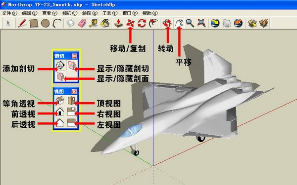
图 15 Google Sketchup 软件界面及要用到的命令
获取机身的横剖面，第一步点击“左视图”（或者其它方向），将模型显示为正面立面。
第二步，然后点击“添加剖面”，这时鼠标出现一个随鼠标移动的绿色方框，表示剖切平面（图 16），鼠标在模型外空白处点击，就生成一个平行于屏幕，也即垂直于机身纵轴的剖切平面。注意若鼠标点击在模型上，则剖切平面会变成模型上该点的相切面。
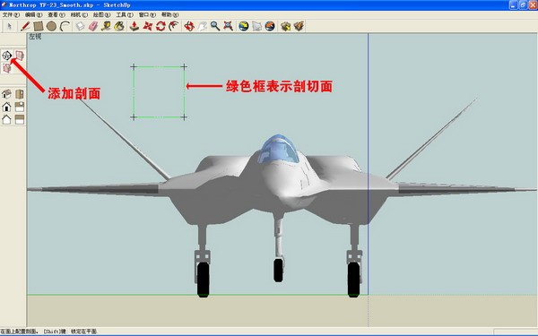
图 16 添加剖面第三步，点击“等角透视”按钮，显示为等角轴测图，点击“移动/复制”按钮，然后点选剖切平面，移动鼠标可以拖动剖切平面沿纵轴移动，将剖切平面移动到机头头锥顶点，作为剖面原点，该剖面编号 F0（图 17）。点击“文件”下拉菜单，点选“导出”—>“二维剖切”（图 18），导出文件格式选 Dwg，命名为“F0.dwg”，点击“导出”，完成导出第一个机身剖面 F0。
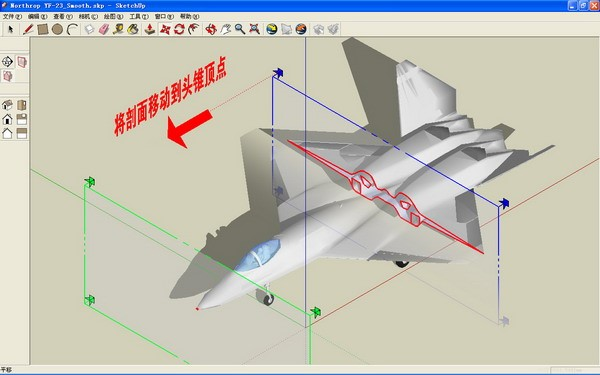
图 17 将剖面移动到机身顶点
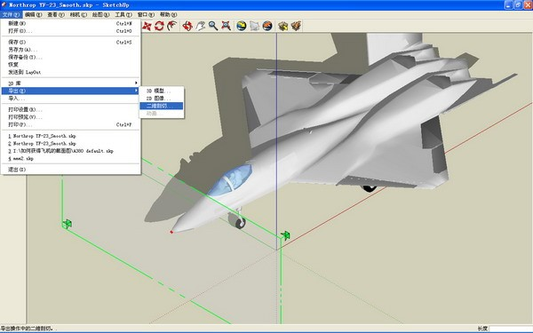
图 18 导出 DWG 剖面图第四步，点击“移动/复制”按钮，点选剖切平面，向机尾方向移动，然后用键盘输入移动距离，例如“1500”，代表移动 1500mm（图 19），移动剖切平面后，再次导出此处的机身剖面“F1”。
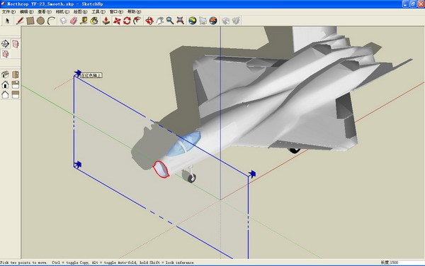
图 19 移动剖面位置,导出第二个剖面图
重复第四步，按间距 1500 移动、导出剖面，得到一系列沿机身纵轴的间距 1500 的剖面
F0.dwg,F1.dwg……F10.dwg（图 20），就完成了机身横剖面的导出。
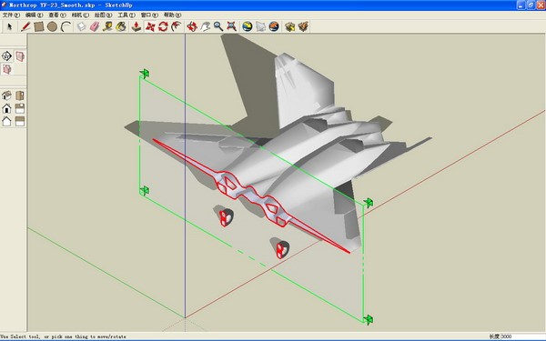
图 20 继续完成剖面图导出
也可以按此方法，导出机身的纵剖面（图 21）。图 22 显示的是经过组合在一起的 YF23 纵横剖面 Dwg 文件。
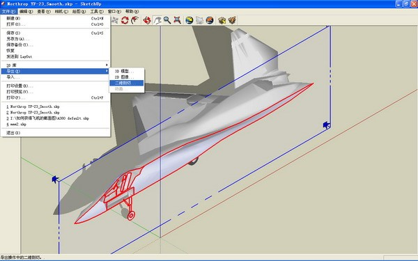
图 21 同样方法可以导出机身纵剖面图

图 22 完成导出的 YF23 机身纵横剖面图通过以上介绍的三种获取机身剖面图的方法，获得机身的各个剖面以后，为了验证剖面的准确性，建议用所得剖面进行三维建模，生成三维模型直观地校验体型的准确性，可以避免以不准确的剖面作依据而制作有偏差的模型。图 23 就是用 F16 机身剖面图建模生成的三维模型，可见剖面、体型是基本准确的。
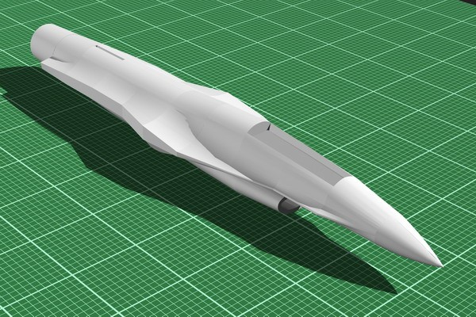
图 23 用剖面图返回建模的 F16 机身
图 24 与图 25 是笔者依据上述方法取得的剖面图，所设计制作的 F16 与 Mig15 模型。
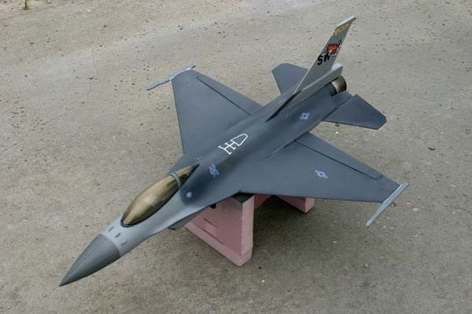
图 24 笔者制作的 F16 模型
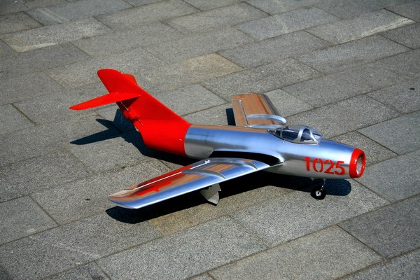
图 25 笔者制作的 Mig15 模型
除了以上三种方法，还有不少取得飞机剖面图的巧妙途径，模友在制作的实践中也会有多种多样的解决方案，笔者总结的粗陋方法权当抛砖引玉，希望广大的模友交流补充。